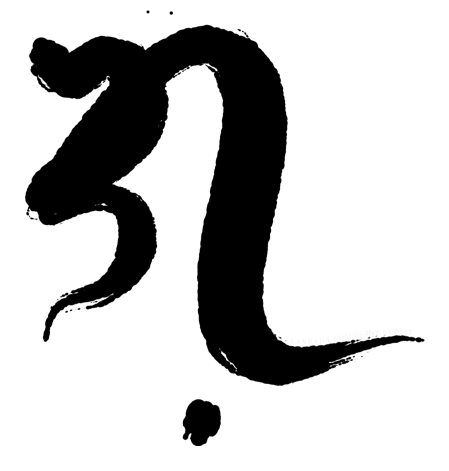
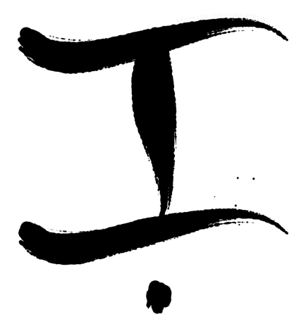
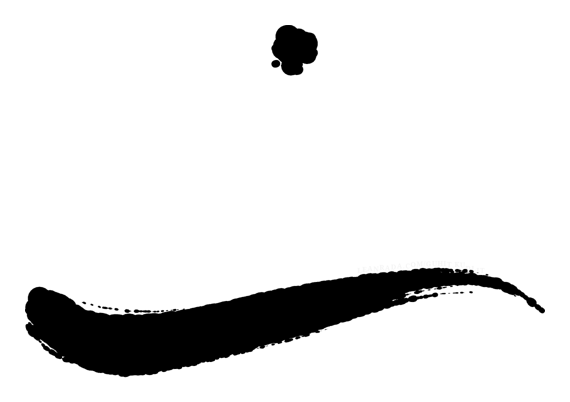
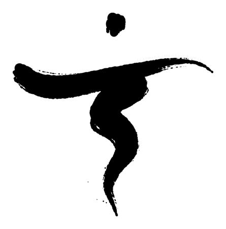
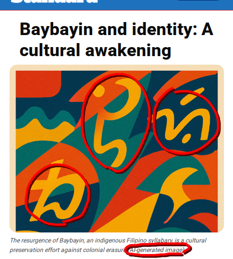

GuhitKudlit is a free webapp for making Baybayin calligraphy. I started this project in 2023 and have kept improving it in my free time. I’m a software engineer and artist and this was born of my interest in procedural art and Baybayin.I first learned about Baybayin in elementary school. Back then it was just a piece of ancient history and no one really used it. Nowadays, you could see Baybayin on signs, logos, clothing, jeepneys, tattoos, and more. Filipinos are increasingly using Baybayin, even if only for aesthetic purposes.
Sometimes aesthetics become the only goal that the right spelling and meaning of the actual words are lost. Sometimes you’d even see tattoos that are actually unreadable. Often we choose convenience over correctness, especially now with AI adding fuel to the fire.

So I started GuhitKudlit. Aesthetics, convenience, and correctness can still go together, right? With these goals in mind, I settled into a few guiding principles for this project.

Transparency with spelling
When I first made GuhitKudlit v1, it was the only Baybayin app that showed how the syllabication worked. Others just gave you an answer with no explanation. How would you know if it was accurate? If we give everyone, even non-experts, the means to easily verify the output, we will get better results for more people. On top of that, users will naturally learn when they can see how it works.

Human intelligence
GuhitKudlit is not ‘smart’. There’s no AI or anything like that. When something is unclear, like foreign letters, it leaves the disambiguation to you who knows the name or word you want to convey best. This way, you can create a result you can be proud of.

Crafted calligraphy
The calligraphy is procedurally generated using graphical algorithms & techniques I’ve honed over the years. GuhitKudlit v2 uses a system of hand-authored Baybayin vector glyphs, mathematical layout and composition optimizers, and various brush and paint simulations. It doesn’t use AI image generators.

Free for everyone
Everything GuhitKudlit can do is free of charge. All styles, color choices, and more are free for everyone. Honestly, making projects like this is both my passion and hobby, and I’m happy to see people use and enjoy them.
In the this age where answers arrive faster than truth, I’m afraid we may start forgetting the real form, usage, and history of the Baybayin script. I hope that through this project, I can help enrich and preserve Baybayin for future generations. - ᜎᜒᜌᜈ᜕ (Lean)
Ang GuhitKudlit ay panggawa ng kaligrapiyang Baybayin. Sinimulan ko ang proyektong to noong 2023 at pinagpatuloy sa sarili kong oras. Ako ay isang tagasining na software engineer at ito ay bunga ng hilig ko sa procedural art at Baybayin.
Una kong natutunan ang Baybayin noong elementarya. Noon ay lumang piraso lang ito ng kasaysayan at wala talagang gumagamit nito. Pero ngayon makikita mo na ang Baybayin sa karatula, logo, damit, sa dyipni, tato, at iba pa. Dumarami na ang Pilipinong gumagamit ng Baybayin kahit na pang-estetik lang.
Minsan hanggang estetik lang talaga tapos mali naman yung hulog o mismong pagkakabaybay. Minsan makakakita ka pa ng tato na di naman mabasa. Madalas kasi pinipili natin yung madali kahit di tama, lalo na ngayong may AI pang nakikisawsaw.
Kaya sinimulan ko ang GuhitKudlit. Kakayanin namang pagsabayin ang estetik, pagkakadaling gamitin, at kawastuhan di ba? Para makamtan to ay nagkaroon ako ng ilang mga prinsipyo para sa proyektong to.
Malinaw na pagkakabaybay
Noong una kong ginawa ang GuhitKudlit v1, ito lang ang tanging Baybayin app na pinapakita yung pagkakapantig. Sa iba kasi sagot lang walang paliwanag. E paano ka naman makakatiyak na tama yon? Kung bibigyan lahat pati mga di eksperto ng kakayahang suriin ang output, mas gaganda ang resulta para sa lahat. Bukod pa ron ay natural na matututo tayo kung makikita natin kung paano ito nangyayari.
Walang dunung-dunungan
Aaminin kong hindi masyadong matalino ang GuhitKudlit at tama lang yon dahil ang tunay na karunungan ay nasa tao. Kapag may di malinaw gaya ng banyagang letra, hahayaan nitong ikaw ang magpasya at maglinaw bilang ikaw ang pinakanakakaalam sa pangalan o salitang gusto mong iparating. Sa ganitong paraan ay makakagawa ka ng resultang maipagmamalaki mo.
Kaligrapiyang tila gawang-kamay
Ang kaligrapiya nito ay galing sa mga algoritmong grapikal at mga pamamaraang hinasa ko nang ilang taon. Ang GuhitKudlit v2 ay gumagamit ng minanu-manong vector para sa bawat simbolong Baybayin, matematikal na paglapat at pagkomposisyon, at simulasyon ng ᜁᜊᜁᜊᜅ᜕ pinsel at pintura. Di ito gumagamit ng AI image generator.
Libre para sa lahat
Lahat ng kayang gawin sa GuhitKudlit ay walang bayad. Lahat ng istilo, pagpipilian ng kulay, at iba pa ay libre para sa lahat. Sa totoo lang, ang ganitong mga proyekto ay isang dedikasyon at libangan ko na rin, at masaya na akong may gumagamit at natutuwa sa mga to.
Sa panahon ngayon kung saan mas nauuna pa ang sagot kaysa katotohanan, natatakot akong baka malimutan natin ang tunay na anyo, paggamit, at kasaysayan ng sulat Baybayin. Sana sa pamamagitan ng proyektong to, makatulong ako sa pagpayaman at pagpanatili ng Baybayin para sa susunod na mga henerasyon. - ᜎᜒᜌᜈ᜕ (Lean)